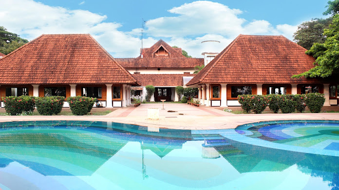
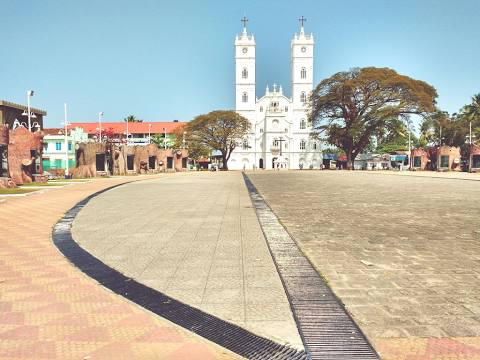

Hill Palace Museum
It is the largest beautiful archeological museum in the state and was the imperial administrative office and official residence of the Cochin Maharaja.It is a historical mueseum

Bolgatty Palace and Island Resort
This is the oldest palace built by the Dutch outside the Kingdom of Holland.Bolgatty Island is neatly tucked away amidst a giant umbrella of refreshing green.

Vallarpadam Basilica
The National Shrine Basilica of Our Lady of Ransom aka Vallarpadam Basilica located in Vallarpadam in kochi is minor Basilica and a major Christian pilgrimage centre